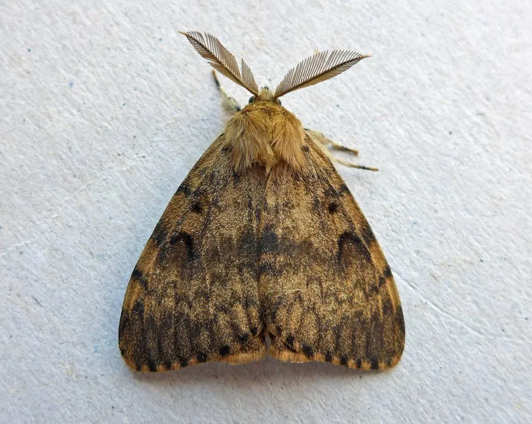

昆虫 · 动物界
舞毒蛾 Lymantria dispar

欧亚大陆的阔叶林害虫，雌雄蛾外形差异极大，幼虫体表有毛可致皮肤过敏，在北美是著名的入侵物种。
- 分类
- 门节肢动物门纲昆虫纲目鳞翅目科毒蛾科属毒蛾属
- 栖息环境
- 阔叶林、果园、城市绿地与防护林
- 地理分布
- 原产欧亚大陆，中国东北、华北等地有分布；北美洲为入侵区
- 保护级别
- IUCN 暂无评估；中国未列入国家重点保护名录
物种志
舞毒蛾雌蛾翅展 5–6 厘米，体色浅白或灰白，前翅有深色波浪状横纹；雄蛾翅展仅 3.5–4 厘米，体色深褐，触角呈宽大的羽毛状，雌雄差异十分明显。幼虫体表有长毛和疣突，体色灰褐并带蓝色或红色斑点，受惊时会昂头摇摆。
它原产于欧亚大陆，中国东北、华北等地有分布，栖息于阔叶林、果园和城市绿地，幼虫取食栎、杨、柳、苹果等数百种植物叶片，大发生时可将整片林木吃光。它一年发生 1 代，雌蛾在树皮或石块上产卵 400–1000 枚，以卵块越冬，翌年春季孵化。舞毒蛾于 19 世纪被引入北美，因缺少天敌而成为严重的入侵害虫，造成大面积森林受害；在中国它是本土林业害虫，主要威胁来自幼虫的毒毛和食叶危害，接触幼虫毒毛可引起皮肤瘙痒和过敏。
形态与习性
- 食性幼虫取食栎、杨、柳、苹果等树木叶片
- 翅展雌蛾 5–6 cm，雄蛾 3.5–4 cm
- 寿命成虫约 1 周，一年 1 代
- 繁殖卵生，雌蛾产卵 400–1000 枚，以卵块越冬
- 活动节律蛾类夜间活动
- 毒性幼虫毒毛接触皮肤可引起瘙痒和过敏
趣味知识
- 舞毒蛾雌蛾体色浅白、雄蛾深褐，雌雄外形差异很大。
- 19 世纪它被引入北美后缺少天敌，成为著名的入侵森林害虫。
- 舞毒蛾幼虫的毒毛接触皮肤会引起瘙痒和红肿，应避免直接接触。